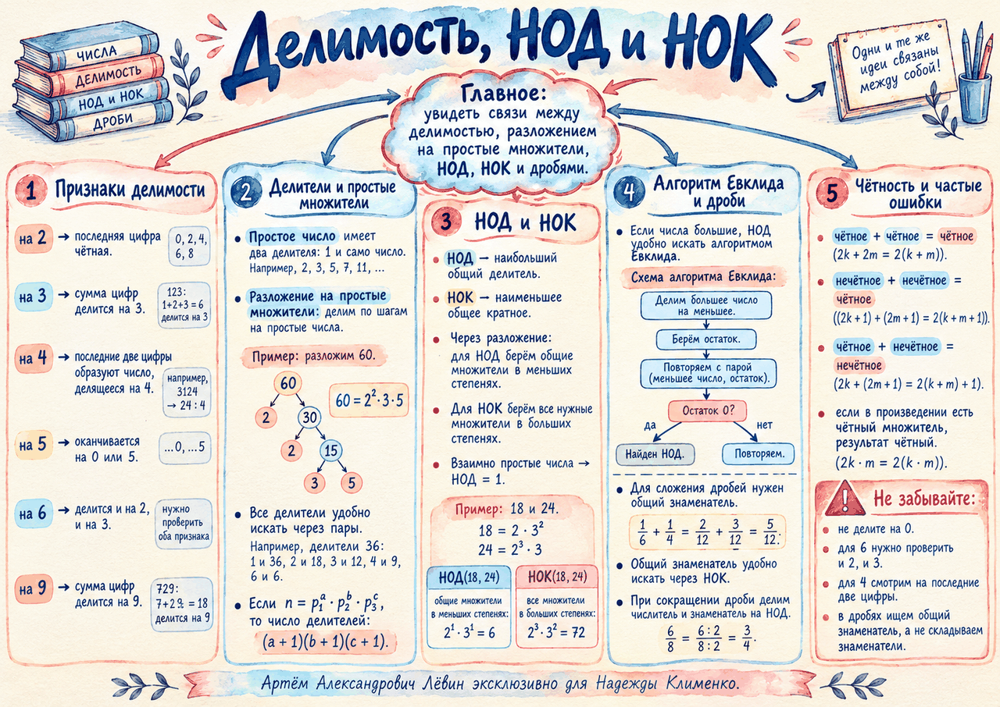

НОД — минимальные степени
Берём только общие простые множители и для каждого выбираем меньшую степень.
НОД(a,b) — наибольший общий делитель.
Если НОД(a,b)=1, числа взаимно простые. Например, 14 и 25.
Занятие · 03.10.26
Повторение перед контрольной связывает признаки делимости, разложение на простые множители, количество делителей, НОД и НОК, чётность и работу с дробями в одну систему.
Один и тот же язык простых множителей помогает понять, на что делится число, сколько у него делителей, как найти НОД и НОК и как работать с общим знаменателем.
756 = 2² · 3³ · 7τ(756) = (2+1)(3+1)(1+1) = 24756 делится на 2, 3, 4, 6, 9, 12 и 18чётность и делимость читаются до полного вычисления
Постер занятия.
Краткая карта связей между признаками делимости, простыми множителями, НОД, НОК, алгоритмом Евклида, чётностью и дробями.
01 · Быстрое распознавание
Признак делимости позволяет решить вопрос без самого деления. В контрольной особенно важны признаки на 2, 3, 4, 5, 6, 9, 12 и 18.
Если натуральное число a делится на b без остатка, то b — делитель числа a, а a — кратное числа b.
Последняя цифра: 0, 2, 4, 6 или 8.
Сумма цифр делится на 3.
Число из двух последних цифр делится на 4.
Последняя цифра 0 или 5.
Одновременно работают признаки на 2 и на 3.
Сумма цифр делится на 9.
Число делится и на 3, и на 4.
Число делится и на 2, и на 9.
Живое число
Измените число: признаки, разложение и количество делителей пересчитаются из одного состояния.
02 · Структура числа
Разложение на простые множители показывает внутреннее устройство числа. Из него удобно читать НОД, НОК и количество делителей.
Имеет ровно два натуральных делителя: 1 и само число. Число 1 не является ни простым, ни составным.
Удобно идти парами. Для 36: 1·36, 2·18, 3·12, 4·9, 6·6. После √36 новые пары не появятся.
Последовательно делим на простые числа 2, 3, 5, 7, …, пока не получим 1.
03 · Две операции
Обе операции работают с теми же простыми множителями, но выбирают степени по противоположным правилам.
Берём только общие простые множители и для каждого выбираем меньшую степень.
Если НОД(a,b)=1, числа взаимно простые. Например, 14 и 25.
Берём все простые множители, которые встречаются хотя бы в одном числе, и выбираем большую степень.
Полезная проверка: НОД(a,b) · НОК(a,b) = a · b.
04 · Для больших чисел
Когда разложение большого числа неудобно, НОД находится последовательным делением с остатком. В новую пару переходят меньшее число и остаток.
1220 = 2 · 440 + 340r = 340440 = 1 · 340 + 100r = 100340 = 3 · 100 + 40r = 40100 = 2 · 40 + 20r = 2040 = 2 · 20 + 0НОД = 2005 · Без лишних вычислений
Для многих выражений достаточно определить чётность слагаемых или множителей — вычислять само значение не требуется.
| Первое | Второе | Результат |
|---|---|---|
| чётное | чётное | сумма чётная |
| нечётное | нечётное | сумма чётная |
| чётное | нечётное | сумма нечётная |
| чётное | любое целое | произведение чётное |
| нечётное | нечётное | произведение нечётное |
06 · Применение
НОК знаменателей даёт общий знаменатель, а НОД числителя и знаменателя позволяет максимально сократить дробь.
НОД(105,84)=21, поэтому 105/84 = (105:21)/(84:21) = 5/4.
0,38 = 38/100 = 19/50. После перевода всегда проверяем возможность сокращения.
07 · Перед контрольной
Отмечайте только те пункты, которые можете объяснить своими словами без подсказки. Отметки сохраняются в этом браузере.
0 из 11 пунктов